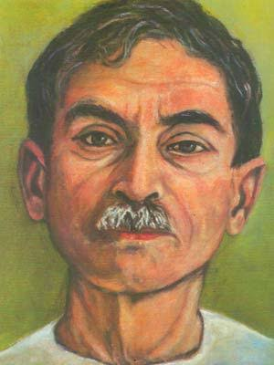

धनपत राय श्रीवास्तव (31 जुलाई 1880, वाराणसी – 8 अक्टूबर 1936, वाराणसी) जो प्रेमचंद नाम से जाने जाते हैं, वो हिन्दी और उर्दू के सर्वाधिक लोकप्रिय उपन्यासकार, कहानीकार एवं विचारक थे। उन्होंने सेवासदन, प्रेमाश्रम, रंगभूमि, निर्मला, गबन, कर्मभूमि, गोदान आदि लगभग डेढ़ दर्जन उपन्यास तथा कफन, पूस की रात, पंच परमेश्वर, बड़े घर की बेटी, बूढ़ी काकी, दो बैलों की कथा आदि तीन सौ से अधिक कहानियाँ लिखीं। उनमें से अधिकांश हिन्दी तथा उर्दू दोनों भाषाओं में प्रकाशित हुईं। उन्होंने अपने दौर की सभी प्रमुख उर्दू और हिन्दी पत्रिकाओं जमाना, सरस्वती, माधुरी, मर्यादा, चाँद, सुधा आदि में लिखा। उन्होंने हिन्दी समाचार पत्र जागरण तथा साहित्यिक पत्रिका हंस का संपादन और प्रकाशन भी किया। इसके लिए उन्होंने सरस्वती प्रेस खरीदा जो बाद में घाटे में रहा और बन्द करना पड़ा। प्रेमचंद फिल्मों की पटकथा लिखने मुंबई आए और लगभग तीन वर्ष तक रहे। जीवन के अंतिम दिनों तक वे साहित्य सृजन में लगे रहे। महाजनी सभ्यता उनका अंतिम निबन्ध, साहित्य का उद्देश्य अन्तिम व्याख्यान, कफन अन्तिम कहानी, गोदान अन्तिम पूर्ण उपन्यास तथा मंगलसूत्र अन्तिम अपूर्ण उपन्यास माना जाता है।
| रचना का नाम | रचना का प्रकार |
|---|---|
| No story yet | कहानी |